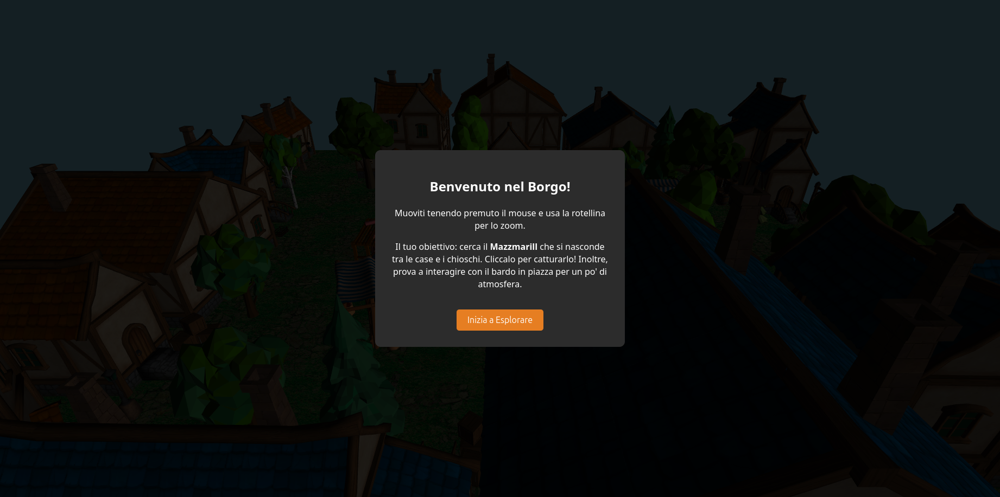
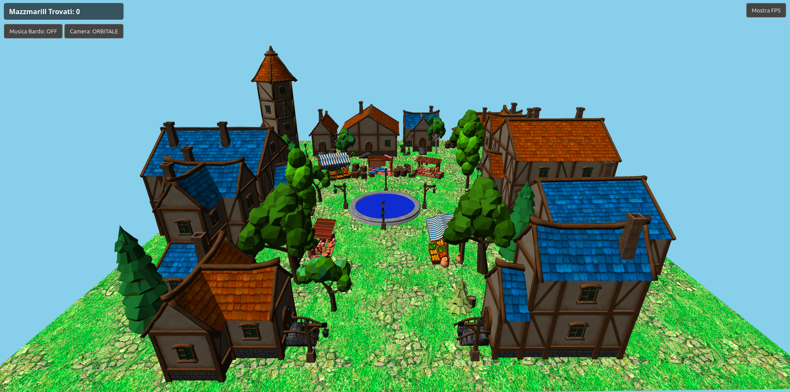
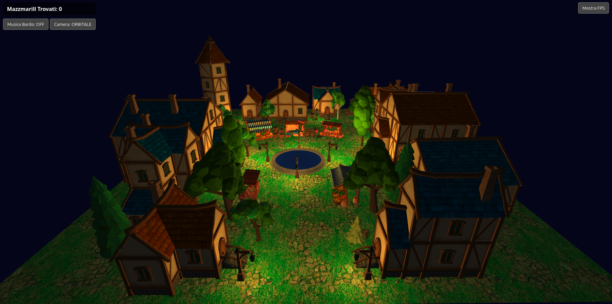

Scena 3D interattiva sviluppata in WebGL 2.0

Questo progetto illustra la progettazione e lo sviluppo di una scena 3D interattiva interamente basata su WebGL 2.0. L'obiettivo è la navigazione ed esplorazione in tempo reale di un borgo medievale, supportata da un motore di rendering custom che implementa illuminazione dinamica (Lambertiana e attenuazione quadratica), materiali testurizzati e disegno istanziato (Instanced Drawing) per garantire fluidità a 60 FPS.
Per conferire dinamismo all'ambiente, la scena fa da sfondo ad un gioco ispirato al folklore abruzzese: la ricerca del Mazzmarill. Nella tradizione popolare dell'Abruzzo (ma anche in altre zone del sud Italia), il Mazzmarill (o Mazzamurello) è un dispettoso folletto, noto per la sua natura elusiva, per i rumori improvvisi che genera e per la sua abitudine di nascondersi e burlarsi dei viandanti. Trasponendo questo mito all'interno dello spazio virtuale, è stato sviluppato un minigioco di esplorazione.
L'utente è invitato a perlustrare i vicoli per scovare il folletto. L'interazione avviene tramite un algoritmo matematico di Raycasting: calcolando l'intersezione tra il clic dell'utente e lo spazio 3D, il sistema valida la cattura. Il successo innesca una transizione di stato logico che avvia animazioni procedurali, un feedback audio ambientale (il ghigno della creatura) e il successivo teletrasporto del modello in un nuovo nascondiglio invisibile, pescato da una mappa di punti predefiniti.
A completare l'atmosfera immersiva, il borgo è governato da un orologio interno che regola un ciclo giorno-notte procedurale, il quale altera progressivamente i colori del cielo e l'inclinazione della luce solare direzionale, innescando l'accensione autonoma delle luci puntiformi dei lampioni cittadini al calare della notte.
L'applicazione è strutturata seguendo il paradigma della Separation of Concerns (Separazione degli Interessi), dividendo nettamente il livello di presentazione visiva, la logica matematica e la gestione dell'interfaccia 2D. Il sistema si basa su quattro componenti software principali:
index.html e regole CSS: Gestiscono la sovrapposizione dell'interfaccia utente (HUD). Sfruttando gli elementi del DOM (sovrapposti in position: absolute rispetto al <canvas> WebGL), permettono l'inserimento di menù contestuali, popup informativi e contatori di punteggio senza gravare sul buffer di rendering 3D.app.js: Costituisce il core dell'applicazione. Coordina l'inizializzazione del contesto WebGL, la gestione degli stati delle entità (Bardo e Mazzmarill), l'intercettazione degli input e il Main Game Loop governato dal metodo requestAnimationFrame.utilities.js: Un modulo di supporto che incapsula le operazioni a basso livello, come la compilazione degli shader program, l'allocazione dinamica dei buffer (VBO/VAO) e il parsing custom dei file .obj e .mtl, accompagnato dal fetching asincrono delle texture.Il ciclo di vita dell'applicazione prevede una fase di inizializzazione asincrona (tramite costrutti async/await),
durante la quale vengono scaricate in memoria le texture e convertite le topologie dei modelli 3D. In questa fase, per superare i limiti
strutturali di WebGL legati all'assegnazione univoca delle coordinate UV sui vertici condivisi (fenomeno che genera artefatti visivi sulle
texture), gli asset geometrici sono stati preventivamente ottimizzati all'interno dell'editor (Blender), scorporando e triangolando le mesh
per singolo materiale prima dell'esportazione.
Solo al termine di tutte le Promise di caricamento il layout 2D di attesa viene nascosto e viene invocata la prima iterazione della
funzione drawScene, dando avvio al rendering continuo della scena.
Il cuore grafico dell'applicazione si basa su una pipeline di rendering ottimizzata per minimizzare le chiamate di disegno
(draw calls) tra CPU e GPU. Le geometrie estratte dai file .obj vengono parsate e immagazzinate all'interno
di Vertex Buffer Objects (VBO). Questi buffer contengono gli attributi fondamentali di ogni vertice: posizione nello
spazio locale, coordinate di texture (UV map) e normali, raggruppati logicamente tramite Vertex Array Objects (VAO)
per un rapido binding in fase di rendering.
Al fine di garantire prestazioni ottimali e mantenere un framerate stabile, il motore grafico fa un uso estensivo dell'Instanced Drawing (Disegno Istanziato). Questa tecnica si è rivelata fondamentale per la gestione di elementi ripetuti o dinamici, come le fonti di luce architettoniche (i lampioni), il sistema particellare delle note musicali che orbitano attorno al bardo e il modello del Mazzmarill.
Invece di invocare il comando di disegno sequenzialmente per ogni singola entità, il sistema carica la geometria base del modello
una sola volta nella memoria video (VRAM). Le trasformazioni spaziali specifiche di ogni istanza — traslazione, rotazione e scala —
vengono calcolate dalla CPU, aggregate in matrici 4x4 e serializzate in una struttura dati contigua di tipo Float32Array.
Tale array viene trasmesso a un VBO dedicato alle istanze. Utilizzando l'istruzione gl.vertexAttribDivisor,
il vertex shader viene istruito ad avanzare nella lettura di questo buffer non per ogni vertice elaborato, ma esclusivamente al cambio
di istanza. Il rendering effettivo avviene tramite la chiamata a gl.drawArraysInstanced, che demanda alla GPU la
parallelizzazione del calcolo visivo di tutte le entità in un'unica passata.
Per la gestione degli oggetti animati, come la fluttuazione sinusoidale delle note o il teletrasporto del Mazzmarill, l'array delle
matrici viene ricalcolato nel Main Loop e re-inviato al buffer della scheda video frame-by-frame, sfruttando il flag
gl.DYNAMIC_DRAW per segnalare a WebGL l'elevata frequenza di aggiornamento dei dati e ottimizzare l'allocazione
della memoria.
L'impatto visivo e l'atmosfera del borgo sono definiti da un modello di illuminazione ibrido, calcolato interamente a livello di frammento (Per-Pixel Lighting) per massimizzare la precisione cromatica e la definizione dei volumi. Gli shader program, scritti in linguaggio GLSL, sono suddivisi in base alle responsabilità: il Vertex Shader si occupa del calcolo spaziale e della proiezione, mentre il Fragment Shader risolve l'equazione di illuminazione finale.
Il calcolo base della luce implementa la riflessione diffusa secondo il modello di Lambert. Il Fragment Shader esegue il prodotto scalare tra il vettore normale della superficie (interpolato per ogni frammento) e il vettore direzione della sorgente luminosa principale, che funge da sole o luna a seconda della fase temporale. Questa operazione matematica assicura che i poligoni esposti frontalmente alla luce risultino illuminati al massimo, sfumando gradualmente nei toni dell'ombra geometrica laddove le normali risultino perpendicolari o opposte ai raggi.
Per arricchire la scena e fornire profondità ai vicoli in assenza di luce solare, sono stati implementati molteplici lampioni come sorgenti di luce puntiforme. A differenza della luce direzionale, l'energia di queste fonti decade progressivamente all'aumentare della distanza. Per garantire un comportamento fisicamente accurato della luce sulle facciate degli edifici, il Fragment Shader applica una funzione di attenuazione quadratica, calcolata come l'inverso di un polinomio di secondo grado. Questo assicura un decadimento della luce non lineare ma realistico, che si fonde in maniera morbida con l'ambiente circostante.
Il seguente estratto in GLSL illustra l'algoritmo di attenuazione quadratica adottato per le luci puntiformi:
// Decadimento quadratico della luce puntiforme (Fragment Shader)
float distance = length(u_lightPosition - v_surfacePosition);
float attenuation = 1.0 / (u_constant + u_linear * distance + u_quadratic * (distance * distance));
vec3 pointLightColor = u_lightColor * attenuation;
L'applicazione dispone di un ciclo temporale procedurale che simula il transito tra il giorno e la notte.
Sfruttando un timer aggiornato costantemente tramite il Main Loop di JavaScript e iniettato come variabile uniform,
la funzione nativa GLSL mix() esegue un'interpolazione lineare (LERP) su molteplici valori: il colore del cielo
(impostato dinamicamente via gl.clearColor) e l'intensità della luce direzionale.
Con il diminuire della luce ambientale serale, la logica JavaScript innesca i valori di intensità delle luci puntiformi,
attivando i lampioni del borgo in modo sincronizzato.
Giorno:

Notte:

Poiché i modelli 3D importati nella scena (formato .obj) sono geometrie statiche prive di un'armatura interna (rigging e skinning), le animazioni non sono basate su fotogrammi chiave precalcolati, ma vengono generate dinamicamente a runtime. Questo approccio, noto come animazione procedurale, sfrutta funzioni matematiche continue per aggiornare le matrici di trasformazione (Model Matrix) di ciascuna entità frame dopo frame.
Per gestire in modo pulito il comportamento interattivo del Mazzmarill, l'architettura software implementa il pattern della Macchina a Stati Finiti. Ogni istanza del folletto possiede un oggetto JavaScript dedicato che traccia le sue coordinate spaziali di base e il suo stato logico corrente ('IDLE' per l'attesa di default e 'CAUGHT' quando viene intercettato dall'utente). Le transizioni di stato fungono da trigger per sbloccare i calcoli dell'animazione e per la temporizzazione degli eventi successivi, come il riposizionamento strategico.
Quando lo stato del folletto passa a 'CAUGHT', il motore grafico applica una trasformazione basata sullo scorrere del tempo per simulare una reazione fisica, nello specifico un salto con avvitamento. Sfruttando la funzione trigonometrica del seno (Math.sin) calcolata in valore assoluto, si ottiene un realistico effetto di "rimbalzo" lungo l'asse verticale (Y). Parallelamente, un approccio simile è impiegato per animare il sistema particellare delle note musicali emesse dal bardo: funzioni sfalsate di seno e coseno permettono alle mesh delle note di fluttuare seguendo traiettorie a spirale in continua ascensione attorno alla posizione del musicista.
Di seguito si riporta l'algoritmo impiegato all'interno del Main Loop per l'animazione procedurale del salto del Mazzmarill, con successiva gestione del rilocamento del modello da un array di nascondigli predefiniti:
// Logica di animazione procedurale per la fuga del Mazzmarill
if (mazz.state === 'CAUGHT') {
mazz.animTimer += 0.05;
// Calcolo del rimbalzo sull'asse Y tramite funzione sinusoidale assoluta
let jumpHeight = Math.abs(Math.sin(mazz.animTimer * Math.PI)) * 1.5;
// Applicazione della traslazione e di una rotazione sull'asse Y (effetto trottola)
let mat = m4.translation(mazz.basePosition[0], mazz.basePosition[1] + jumpHeight, mazz.basePosition[2]);
mat = m4.yRotate(mat, mazz.animTimer * 10.0);
// Scalatura dell'istanza e salvataggio della matrice
mazz.matrix = m4.scale(mat, 0.4, 0.4, 0.4);
// Al termine del ciclo di salti (2 secondi), reset e teletrasporto mirato
if (mazz.animTimer > 2.0) {
// Estrazione di una nuova coordinata dall'array "nascondigli" (Level Design)
const randomIndex = Math.floor(Math.random() * nascondigli.length);
const nuovoSpot = nascondigli[randomIndex];
// Riassegnazione coordinate e rotazione base
mazz.basePosition = [nuovoSpot.pos[0], nuovoSpot.pos[1], nuovoSpot.pos[2]];
let resetMat = m4.translation(mazz.basePosition[0], mazz.basePosition[1], mazz.basePosition[2]);
resetMat = m4.yRotate(resetMat, nuovoSpot.rotazione);
mazz.matrix = m4.scale(resetMat, 0.4, 0.4, 0.4);
// Reset della macchina a stati per consentire una nuova cattura
mazz.state = 'IDLE';
mazz.animTimer = 0.0;
}
}
Nei sistemi 3D interattivi, la selezione degli oggetti tramite il cursore del mouse (picking) richiede una conversione complessa, poiché l'input avviene in uno spazio bidimensionale (lo schermo), mentre le entità risiedono in uno spazio tridimensionale (il mondo virtuale). Per catturare il Mazzmarill e attivare il Bardo, l'applicazione implementa un motore custom di Raycasting spaziale.
L'algoritmo esegue una de-proiezione matematica del clic dell'utente. Inizialmente, le coordinate in pixel del mouse vengono mappate nel sistema di Coordinate di Dispositivo Normalizzate (NDC), scalando i valori nel range [-1.0, 1.0]:
Successivamente, questo punto 2D viene espresso come un vettore a quattro componenti e proiettato all'indietro moltiplicandolo per la matrice inversa di proiezione $$M_{proj}^{-1}$$ per ottenere le coordinate nello spazio della telecamera (Eye Space). Infine, si annulla la componente di traslazione (w = 0), si moltiplica per la matrice inversa di vista $$M_{view}^{-1}$$ e si normalizza il vettore per ricavare la direzione pura del raggio d nel World Space:
Di seguito è riportato il frammento di codice che implementa questa pipeline matematica di trasformazione vettoriale:
// 1. Calcolo Coordinate NDC dal clic del mouse
const clipX = (mouseX / gl.canvas.clientWidth) * 2.0 - 1.0;
const clipY = 1.0 - (mouseY / gl.canvas.clientHeight) * 2.0;
const clipCoords = [clipX, clipY, -1.0, 1.0];
// 2. Trasformazione in Eye Space tramite Inversa della Proiezione
const invProjection = m4.inverse(projectionMatrix);
let eyeCoords = m4.transformVector(invProjection, clipCoords);
eyeCoords = [eyeCoords[0], eyeCoords[1], -1.0, 0.0];
// 3. Trasformazione in World Space tramite Inversa View e Normalizzazione
const invView = m4.inverse(viewMatrix);
let rayWorld = m4.transformVector(invView, eyeCoords);
let rayDirection = m4.normalize([rayWorld[0], rayWorld[1], rayWorld[2]]);
Una volta calcolata la direzione del raggio d, il sistema verifica se questo interseca il volume di ingombro sferico (hitbox) del bersaglio. Siano c la posizione della telecamera e p il centro del modello 3D, si calcola il vettore che unisce i due punti: $$\vec{v}_{obj} = \vec{p} - \vec{c}$$.
Proiettando questo vettore sulla direzione del raggio tramite prodotto scalare, si ottiene la distanza scalare t lungo il raggio:
Se t > 0 (ovvero l'oggetto si trova davanti alla telecamera e non alle sue spalle), si calcola il punto esatto sul raggio più vicino al bersaglio ($$\vec{p}_{closest}$$) e la sua distanza D dal centro dell'oggetto p:
Se la distanza D risulta inferiore al raggio R della hitbox impostata (D < R), la collisione è validata e l'evento interattivo viene attivato.
Al fine di garantire un'esplorazione ottimale dell'ambiente 3D e assecondare sia l'ispezione architettonica globale che la ricerca ravvicinata nei vicoli, il motore di rendering implementa un sistema di telecamera ibrido. L'utente può commutare dinamicamente a runtime tra una visuale in prima persona (Volo Libero/FPS) e una telecamera Orbitale (Arcball).
La transizione tra le due modalità non comporta la distruzione degli oggetti o il ricaricamento della scena, ma consiste in uno switch algoritmico per il calcolo della matrice di vista (viewMatrix). Nella modalità Orbitale, la posizione della telecamera viene ricavata convertendo le coordinate sferiche (raggio, imbardata, beccheggio) in coordinate cartesiane rispetto a un punto fisso (il centro della piazza). Nella modalità a Volo Libero, lo spostamento avviene calcolando i vettori direzionali Forward e Right basati sugli angoli di Eulero correnti, sommandoli alla posizione in base agli input da tastiera (WASD).
Per rendere il progetto pienamente fruibile su smartphone e tablet, il sistema di input è stato esteso oltre i classici eventi del mouse. Tramite le API Touch di HTML5, il canvas intercetta i tocchi sullo schermo disabilitando preventivamente il comportamento di default del browser (come lo scorrimento della pagina) tramite l'istruzione CSS touch-action: none.
La logica discrimina il numero di punti di contatto attivi: un singolo tocco (e.touches.length === 1) viene tradotto nella rotazione della telecamera o nell'innesco del Raycaster per interagire con i modelli; un doppio tocco simultaneo (e.touches.length === 2) attiva invece il calcolo matematico della distanza euclidea tra le due dita per implementare il Pinch-to-Zoom, andando a scalare il raggio dell'orbita visiva.
Di seguito si riporta lo stralcio dell'algoritmo di gestione del multi-touch per la modalità orbitale:
// Gestione del Pinch-to-Zoom per dispositivi mobili
gl.canvas.addEventListener('touchmove', (e) => {
e.preventDefault(); // Inibisce lo scroll nativo del browser
if (e.touches.length === 2 && cameraMode === 'ORBITAL') {
const dx = e.touches[0].clientX - e.touches[1].clientX;
const dy = e.touches[0].clientY - e.touches[1].clientY;
const currentDistance = Math.sqrt(dx * dx + dy * dy);
if (initialPinchDistance > 0) {
const pinchDelta = initialPinchDistance - currentDistance;
orbitRadius += pinchDelta * 0.05; // Sensibilità dello zoom
// Clamping per evitare compenetrazioni o allontanamenti eccessivi
if (orbitRadius < 3.0) orbitRadius = 3.0;
if (orbitRadius > 40.0) orbitRadius = 40.0;
}
initialPinchDistance = currentDistance;
}
}, { passive: false });